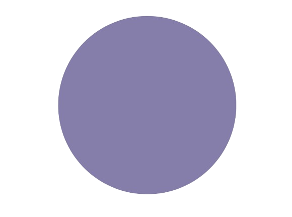

HOME
CONTENT
CONTACT

CLAY
Denise Roberts
Agosto 4
Agosto 25
St. George, Marlborough,
Wiltshire, SN8 1SL, Reino Unido
Una alegre celebración de los vibrantes colores y luz que se encuentran en la costa.
Shore Things
Sigueme en Github
Denise juega con colores,
texturas y marcas para
sugerir banderolas y boyas.
Como artista, está particularmente apasionada con los objetos hermosos exquisitamente hechos para hacernos pensar.
Ella colecciona fotografías de superficies descarapeladas,
cerámica y cestas de picnic.
Adquiere ceramica
Ella es miembro del grupo:
Marlborough Open Studios.
The Clay & Glass Studio,
Grey Gable
y Osbourne.
Denise tiene su propio
estudio de cerámica,
el cual describe como
una choza de playa
al fondo del jardín